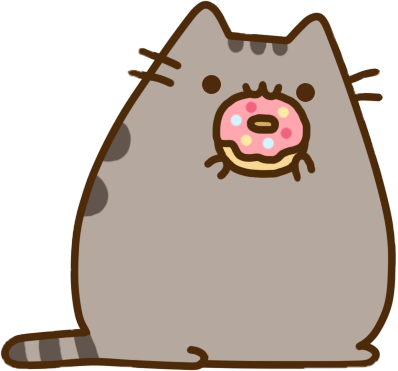
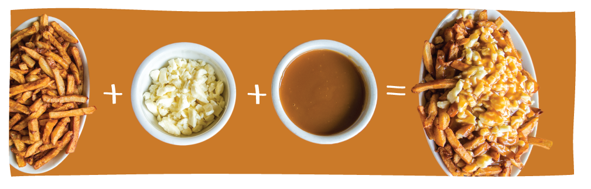
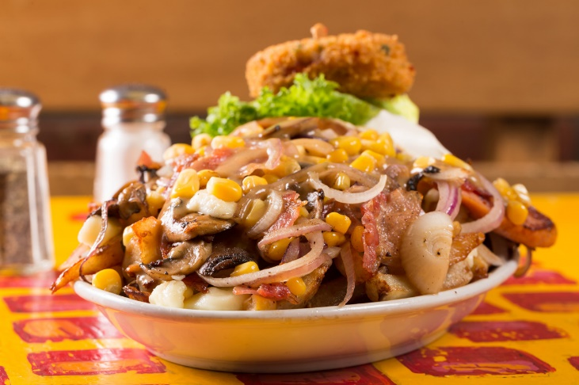
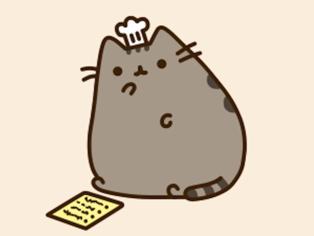

This is a fan made site, not associated with Pusheen.com
Pusheen Poutine art from Matt Cummings Link here
Pusheen is a small grey tabby cat that likes to eat.
One of the foods she enjoys a lot is poutine!
Poutine is made from fresh french fries, cheese curds, and gravy
Her favorite poutine is from Montreal - La Banquise
But most of the time she cooks her own food at home.
